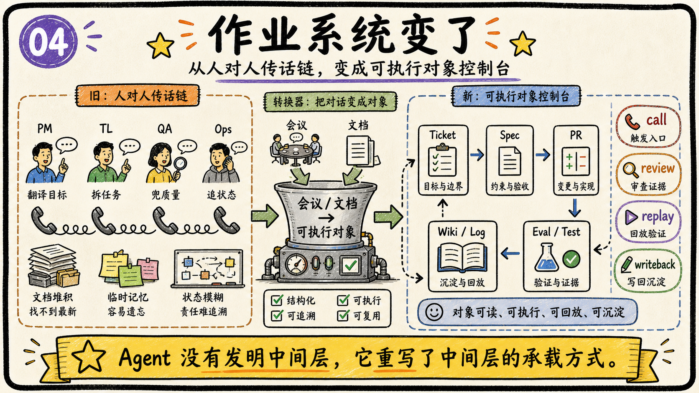

OpenAI：工程系统 agent-first
Harness 的重点不是“写更多代码”，而是 repo、issue、CI、review、观测和文档构成 agent 可以工作的操作系统。公开材料中的数字包括约 5 个月、约 100 万行代码、1500 个 PR、早期 3 名工程师后扩到 7 名。
Internal H5 Draft · Product / Engineering / QA Collaboration
我们真正要转型的不是“大家都用 AI 工具”，而是把产研协作变成目标清楚、过程可委托、结果可审查、失败能写回的组织作业系统。
01 · 判断
OpenAI、Anthropic、Stripe、Block 的材料给了四个方向：工程系统 agent-first、专业工作流 human-AI 协作、商业协议 agent-readable、组织制度 AI-native。它们共同指向一个结论：AI 协作不是把任务丢给模型，而是重写工作对象、责任边界和验证方式。
我们自己的现场更直接。业务意图进入仓库后，会被翻译成 spec、任务、代码、测试、报告和 H5。真正的风险也在这里发生：意图被翻译错、验证只证明了中间层、页面看起来有 DOM 但用户看不到内容、数据库字段在 mock 中存在但真实库没有。AI 让交付变快，也让错误方向的返工变快。
02 · 我们的真实回路
真实回路是反复翻译、验证、打回和写回。AI 可以处理大量中间劳动，但如果没有可审查的作业系统，它会把“看起来完成”推到最前面，把“真实可用”留到最后被用户发现。

前一版 H5 的核心模型：左侧是人的目标、判断和责任，右侧是系统执行、验证和回放，中间靠 spec、eval、review packet、wiki、rules、issue、PR 连接。
03 · 一图流
这张图把整篇 H5 压成一个判断：我们不做 AI 军备竞赛，而是把 AI 放进产研链路，让意图、执行、证据、判断和写回形成闭环。

不做基座模型、不做通用 RAG 平台、不追 AI 使用率、不让 AI 替代业务判断。
意图包、Spec / ADR、Agent 执行包、证据矩阵、Review Packet、人类判断、失败写回、周度指标。
产品守意图，研发交证据，测试定完成，项目管状态，老板看结果。
04 · 模式变化
用六个问题重新校准后，这件事的边界更清楚：我们的目标不是成为 OpenAI、Anthropic、Stripe 或 Block。我们不是基座模型公司，不做通用 RAG 平台，不把组织精力砸进“先搭一个 AI 中台”的大工程，也不把 AI 使用率当成管理成绩。
训练、微调、评测通用模型不是我们的核心战场。那是资本、算力、研究、数据闭环都完全不同的业务。我们要买能力、用能力、约束能力，不是假装自己也要造一个底座。
“把所有文档丢进去搜索”很容易变成另一个无人负责的知识坟场。我们更需要的是 agent-readable 的工作对象：需求原话、OpenSpec、ADR、测试证据、运行日志、视觉验收、review packet。能触发行动和验证，才有价值。
如果只统计“多少人用了 AI”，最后会得到一堆更快生成的草稿和更难追责的错误。应该看的是：真实需求到可验证结果的周期、重复返工是否下降、证据是否完整、失败是否写回。
AI 可以帮忙拆任务、补测试、写草稿、查证据、跑回放，但不能替用户决定什么是好结果，也不能替产品和负责人承担裁剪、取舍、上线风险。
05 · 我们能做什么
这不是平台战略，是日常工作方式升级。我们已经有真实业务系统、真实看板、真实 DB、真实会议、真实需求、真实事故日志。AI 最应该进入的地方，是那些高频、重复、容易漂移、又必须留下证据的协作动作。
把用户原话、对象、动作、结果、非目标、验收路径转成 OpenSpec 或任务包。AI 做整理，人确认意图。
把 spec 拆成可审查 diff、测试、验证脚本和风险清单。AI 提高产出密度，工程师负责架构边界和运行证据。
自动生成 RED/GREEN 场景、真实 DB 检查、浏览器截图、视觉断言、权限路径和回放材料。测试定义完成标准，不只做尾部兜底。
用 AI 汇总会议、日志、延期、风险、阻塞和证据包，但状态必须落到业务链路：意图、spec、执行、审查、真实验证、写回。
把踩坑写成 ADR、gate、skill、ops、tests。不是为了文档好看，而是让下一次 Agent 和下一位同事不再从零开始。
06 · 模式变化
接下来要做的不是“推广 AI 使用”，而是改造软件工程的工作对象。以前的主线是需求、开发、测试、上线；新的主线应该是意图、spec、Agent 执行、证据包、人类判断、失败写回。每个环节都有固定产物，才不会靠口头同步和临场记忆维持质量。
每个需求先沉淀用户原话、业务对象、动作、期望结果、非目标、负责人和验收路径。产品和 PM 对这里负责。没有意图包，Agent 不应直接开工。
跨模块、跨角色、会改变默认协作方式的工作进入 OpenSpec；稳定决策进入 ADR。研发组长负责判断是否需要 spec，不能让大改动伪装成小修。
Agent 每次执行要留下任务范围、改动文件、假设、未做事项、测试和验证命令。工程师审查的是执行包，不是只看“代码已经改了”。
按风险选择证据：单测、集成、真实 API、真实 DB、权限路径、浏览器截图、视觉断言、性能耗时、回放场景。测试部门把证据矩阵变成准入标准。
每个可审查节点都要有 diff 摘要、业务映射、验证结果、截图或日志、风险、需要人判断的问题。没有 review packet，就没有真正的“交付给人审”。
把高频失败写成 skill 或 gate：需求翻译漂移、真实 DB 验证、视觉验收、公共报告形态、H5 输出约束、行为回放。skill 不是提示词收藏，是下一轮运行时会触发的边界。
每次打回都归类：意图错、spec 错、实现错、验证假、视觉错、范围错、项目节奏错。然后写回 tests、ADR、ops、skill 或 checklist。只修当前 bug，不写回，就是下次继续交学费。
管理层看趋势，不看口号：需求到 review packet 的周期、真实验证覆盖、返工次数、fixish 比例、RED/GREEN 证据、运行库事故、视觉打回、写回数量、重复坑是否下降。
这会改变产研协作的默认问题：不再问“谁在开发”，而是问“意图有没有锁定，spec 有没有接受，Agent 执行有没有证据，人审有没有结论，失败有没有写回”。
07 · 工程重塑
需求评审后进入开发，开发完成后给测试，测试发现问题再回流。文档、判断、验证、事故复盘经常散在聊天、会议、个人脑子和临时记录里。
需求一进入就被结构化成意图包和 spec；Agent 负责生成草稿、代码、测试、报告、截图和证据；人负责判断目标、边界、取舍、上线风险；系统负责留下可回放记录。
产品不再只是写需求，而是维护“用户意图不被翻译漂移”的证据链。
研发不再只是提交代码，而是提交可审查的工程结果：代码、测试、运行证据、风险和未决判断。
测试不再只是找 bug，而是定义什么证据足以证明用户路径真的成立。
项目管理不再只是催进度，而是维护协作状态机，让每个任务都能看出卡在意图、spec、执行、验证、审查还是写回。
08 · 模式变化
这组数据不能被解释成“上了 Spec 以后立刻少修 bug”。真实变化更像三段：先靠高频修复推进，再用 OpenSpec 把问题显性化，最后用 skill 门禁把输出形态、证据和回放约束住。短期内修复提交可能上升，因为以前藏在口头确认、局部 smoke、页面观感里的问题开始被命名。
2026-03-16 到 2026-04-10，主要是功能推进、REQ 记录、迁移和连续修复。节奏很快，但验证更多靠局部结果，修复提交占比已经不低。
2026-04-11 到 2026-05-05，平台管理员、数据源团队范围、看板、CLI、加密 DB 配置等开始进入 OpenSpec 或 spec 化流程。fixish 比例升高，不是变差，而是以前靠经验推进的问题开始被拆成明确修复对象。
2026-05-06 到 2026-05-09，视觉验收、真实 DB、需求翻译漂移、共享 raw 数据等问题被写进日志和 gate。短窗口内 fixish 占比降到 24.5%，但更重要的是证据类型变了：不再只看构建和 mock，而是看真实库、真实页面、截图和用户路径。
2026-04-14 到 2026-05-11，协作规则从 wiki 记录发展成 OpenSpec、ADR、skill、ops、report gate review。5 月 8 日公共报告质量门禁出现后，修复提交比例从 3.6% 升到 8.5%，这不是返工失败，而是文章结构、输出形态、引用方式、回放证据被纳入审查。
数据口径：当前 checked-out 分支，`git log --no-merges`，fixish 按提交标题中的 fix、修复、bug、restore、resolve、hotfix 统计。它反映协作模式变化，不等同于线上缺陷率。
09 · 产出数据
两个项目合计 966 个非合并提交，其中 2026-05-01 以后 268 个。account-team-efficiency 留下 160 条协作日志、118 个测试相关文件、37 条 RED 证据日志、33 条 GREEN 证据日志、26 条视觉或截图相关日志、81 条运行库或 DB 相关日志、91 条需求或范围漂移相关日志、13 条性能或超时相关日志。account-meeting-lore 留下 46 个 OpenSpec specs、32 条 ADR、105 条 ops 记录、26 个 repo-local skills、8 个 H5/report HTML、4 个 report gate review。
10 · 血泪史
用户要的是“任务产生的原始数据可以开放给其他组进行加工，通知任务可以选中并按照团队加工”。实现过程却把它翻译成更窄的内部模型：只在某个任务表单入口开放，流程侧仍然读当前团队数据。结果是技术说明自洽，用户路径仍然不通。
异常、离群、样本、原因、处理动作本来是一条业务判断链。只做“能看到异常”，不做“能下钻样本和原因”，就会让产品看似上线、用户无法判断。AI 很容易把可交付切成局部页面，而不是业务闭环。
raw list 延迟优化里，测试假数据包含新字段，编译和 mock 都通过；真实 MySQL 表却没有 `item_count`、`payload_bytes`、`synced_at`，认证后的接口直接 500。结论很简单：DB 相关变更，没有真实运行库证据就不能声称完成。
甘特图问题里，旧证据只看构建、接口、SVG、console；浏览器实际检查才发现背景 `fill` 变成黑色，高度异常膨胀。前端验收必须包含运行页面截图、关键图形 computed style、移动端和窄屏检查。
多轮日志弹窗问题反复修表层交互，真正阻塞在后端 500 和数据链路。AI 能很快补丁，但如果没有 review packet 和真实路径证据，速度会变成“更快地重复错”。
11 · 外部材料给我们的坐标
Harness 的重点不是“写更多代码”，而是 repo、issue、CI、review、观测和文档构成 agent 可以工作的操作系统。公开材料中的数字包括约 5 个月、约 100 万行代码、1500 个 PR、早期 3 名工程师后扩到 7 名。
Claude 的价值在数据、产品、安全、营销、设计、法律等场景里展开。关键动作是先探索、再计划、再验证，同时管理上下文、MCP 和子任务边界。
Instant Checkout、ACP、SPT 的启发在于：当 Agent 进入商业交易，用户、Agent、商家和支付网络之间必须有协议化的责任链。
公开材料显示 95% 工程师经常使用 AI，50 位 AI Champions 投入 30% 时间做赋能，AI-authored code +69%，节省时间 +37%，自动 PR +21x。但组织叙事也会和裁员、岗位减少、信任边界缠在一起。
我们不直接照搬任何一家。我们的当前问题更接近“产研作业系统”：把业务意图、工程执行、测试证据、项目节奏和管理判断连接成可审查链路。
12 · 角色变化
不要只看 AI 使用率。应看需求到可验证结果的周期、重复返工下降、真实运行事故、写回数量、负责人是否清楚。
守住意图链。每个需求必须保留用户原话、业务判断、非目标、验收路径，以及哪些裁剪需要重新确认。
把仓库变成 agent-readable 的执行系统：OpenSpec、ADR、测试、DB 验证、CI 解释、review packet、回滚路径、已知坑都要能被下一轮读取。
使用 AI 产出可审查 diff，而不是外包判断。提交应说明用户原话映射、改了哪些文件、验证了哪些路径、哪些只是 mock 或 smoke。
设计证据负载矩阵：单测、集成、真实 DB、浏览器交互、截图、权限路径、回放场景。测试不是最后兜底，而是定义“完成”的证据结构。
跟踪状态从“任务进行中”升级为：意图已捕获、spec 已接受、Agent 已执行、review packet ready、人类判断完成、真实运行已验证、失败已写回。
13 · 写作流程
先写清楚这篇给谁解决什么判断问题。不是“介绍 AI 协作”，而是回答某个组织下一步该怎么协作。
列出要复用的材料、明确不复用的材料、需要保留的输出形态。newspaper、article、report 一旦选定，就不能漂成数据看板、卡片墙或表格格子。
所有数据都要能回到仓库、日志、ADR、OpenSpec、H5、gate review 或明确的外部材料，不能只写“我们感觉”。
必须有时间切片。没有 Spec、OpenSpec 初期、skill 门禁后，要分开讲；否则只会变成抽象复盘。
把结论落到 Boss、产品、研发组长、工程师、测试、项目管理各自的责任链，而不是泛泛说“团队要提升”。
每篇 H5 都附 gate review：意图契约、引用结构、输出形态、数据口径、禁止漂移项、残余风险。这样下一次 Agent 才能回放。
14 · 下一步
最合适的试点不是再写一套宏大制度，而是挑一个高频且容易暴露判断链的场景：看板指标异常解释链路。用户看到指标异常后，必须能下钻样本、理解原因、决定处理动作；Agent 负责整理证据包，人负责判断和取舍，失败写回规则与测试。

前一版 H5 的“操作系统”结论：Agent 不是孤立工具，必须被 issue、spec、测试、CI、review、wiki、规则、权限共同约束。
15 · 最终判断
产研工作方式的转变，不是把产品、研发、测试、项目管理都变成会提问的人，而是让每个角色都知道自己守哪一段责任链。人决定目标、边界和取舍；Agent 组织上下文、执行重复劳动、生成证据；系统留下可复盘、可回放、可改进的记录。
这就是我们接下来应该做的事：从“AI 帮忙”切到“AI 协作作业系统”。每一次输出都要能回答 5W1H：为什么做、为谁做、做什么、不做什么、在哪里验证、怎么证明。SMART 可以作为检查表，但核心不是模型名称，而是把责任、证据和写回固定下来。